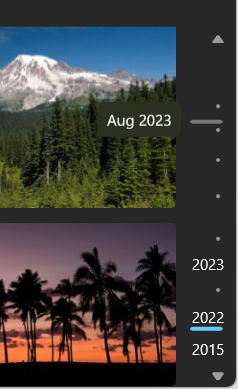

Annotated scrollbar control
An annotated scrollbar helps users easily navigate through a large collection of items. It replaces the default scrollbar and can be used in conjunction with any scrollable container. This vertical scrollbar allows users to scroll up and down through the items in a collection. Users can see category labels along the scrollbar area to provide a visual reference of where they are within their collection. A panning indicator (accent-colored line) indicates the user's current position in the collection. A tooltip is revealed when a user hovers on the scrollbar area. This tooltip contains a label to give more information to the user about their current position in the collection. Scroll arrows are located at the top and bottom of the scrollbar area. They can be used to move the current position by a small increment

The annotated scrollbar can be used in conjunction with an ItemsView control to recreate a photo gallery experience. The category labels can be set to different years to help users navigate to a specific location within their photo collection.
Interactions
On hover, a tooltip is revealed to show a preview of that location. Users can then click to navigate to that specific location. Users can also click and drag anywhere on the scrollbar area to navigate to a new position within their collection. As they drag, the panning indicator stays attached to the mouse cursor and the content scrolls to reflect the new position. Users can also scroll through their collection by using the mouse wheel. Scrolling up or down on the mouse wheel moves their position in the collection and the corresponding panning indicator up or down by a fixed amount.
Note
Unlike in a ScrollBar control, you can't click-and-drag the thumb. The thumb is a non-interactive element that is only for visualizing the current viewport position. The thumb has a fixed height which is not representative of the viewport height.
Label behavior
- For experiences optimized for touch input, users can tap and hold on the scrollbar area to see the tooltip. The tooltip will be slightly more elevated to make it easier to read for touch users. Tapping and dragging anywhere on the scrollbar area will work similarly to a click and drag with mouse.
- The tooltip label is never truncated as its purpose is to display text that's explanatory. Instead, the text is wrapped if it goes over the tooltip's max width of 360px.
- Category labels are clipped if the text is longer than the width of the scrollbar's area.
- When there is a collision between two category labels (for example, when the window size decreases and two labels overlap each other), the top label is removed. As an exception to this rule, the first label of the collection is always kept as it helps to indicate the range of the collection to users. Category labels should always have a minimum of 4px (2px above, 2px below) in between, otherwise a label-collision is triggered.
Is this the right control?
We recommend using an annotated scrollbar, rather than a default scrollbar, when dealing with a large collection of items or when a large amount of scrolling is expected. The annotated scrollbar will provide an easy way for users to locate themselves in their collection and to traverse it.
For collections that only have a few items or that only require a small amount of scrolling, we recommend using a default scrollbar.
Recommendations
- Only add a category label if it provides helpful information to users
- Keep the strings used for the category labels and the tooltip as concise as possible
- The annotated scrollbar is best used when there is sufficient vertical space. Using the annotated scrollbar in a confined vertical space will reduce the number of visible labels
- Do not use the annotated scrollbar as the only way for users to locate themselves within a collection. We recommend using sticky headers or category labels throughout your collection to complement the annotated scrollbar.
Create an annotated scrollbar
- Important APIs: AnnotatedScrollBar class, ScrollView class, IScrollController interface
The WinUI 3 Gallery app includes interactive examples of most WinUI 3 controls, features, and functionality. Get the app from the Microsoft Store or get the source code on GitHub
To use an AnnotatedScrollBar, you need to complete several steps:
- Connect the AnnotatedScrollBar to a scrolling container.
- Add labels to the scrollbar.
- Add detail labels (tooltips).
Connect the AnnotatedScrollBar to a scrolling container
To use an AnnotatedScrollBar, you connect it to a scrollable container via the IScrollController interface. The AnnotatedScrollBar provides an IScrollController implementation through its ScrollController property, while the ScrollView consumes it through its ScrollPresenter property (specifically, ScrollPresenter.VerticalScrollController).
Note
The ScrollView control has built in support for consuming the IScrollController interface. For other scrolling containers, like ScrollViewer, you must write an adapter for IScrollController. See an example later in this article.
Here, the VerticalScrollController property of an ItemsView is bound to the ScrollController of an AnnotatedScrollBar. (The ItemsView.VerticalScrollPresenter property is passed through to the ScrollPresenter.VerticalScrollController value of the ItemsView's inner ScrollView.)
<Grid ColumnDefinitions="*,Auto">
<ItemsView VerticalScrollController="{x:Bind annotatedScrollBar.ScrollController}"/>
<AnnotatedScrollBar x:Name="annotatedScrollBar" Grid.Column="1"/>
</Grid>
You can also connect them in code, as shown here. In this example, a ScrollView is used to wrap an ItemsRepeater and provide scrolling functionality for it. The AnnotatedScrollBar replaces the ScrollView's default scrollbar.
<Grid ColumnDefinitions="*, Auto">
<ScrollView x:Name="scrollView"
Background="LightGray"
MaxWidth="800" MaxHeight="500"
VerticalScrollBarVisibility="Hidden">
<ItemsRepeater x:Name="itemsRepeater"
ItemsSource="{x:Bind ColorCollection}"
Margin="2"
SizeChanged="ItemsRepeater_SizeChanged">
<ItemsRepeater.Layout>
<UniformGridLayout/>
</ItemsRepeater.Layout>
<ItemsRepeater.ItemTemplate>
<DataTemplate x:DataType="media:SolidColorBrush">
<Grid Background="{x:Bind}" Width="112" Height="82"
CornerRadius="4" Margin="4"/>
</DataTemplate>
</ItemsRepeater.ItemTemplate>
</ItemsRepeater>
</ScrollView>
<AnnotatedScrollBar x:Name="annotatedScrollBar" Grid.Column="1"
Margin="4,0,48,0" MaxHeight="500" HorizontalAlignment="Right"
DetailLabelRequested="AnnotatedScrollBar_DetailLabelRequested"/>
</Grid>
private void AnnotatedScrollBarPage_Loaded(object sender, Microsoft.UI.Xaml.RoutedEventArgs e)
{
scrollView.ScrollPresenter.VerticalScrollController = annotatedScrollBar.ScrollController;
}
Labels
The AnnotatedScrollBar can display two kinds of labels, both of which are optional.
Category labels
You add labels by populating the Labels collection. Each Label is represented by the AnnotatedScrollBarLabel class and requires two pieces of information:
- Content: The content that is displayed on the scrollbar.
- ScrollOffset: The offset value at which the label content is displayed.
Labels (if specified) are always visible on the scrollbar, unless they collide with other labels or extend past the bounds of the rail. (See Label behavior for more info.)
The calculation of the label offset value depends on the details of your app and its data. For one example of how the offset can be calculated, see the WinUI Gallery example on GitHub.
Detail labels
A detail label is a tooltip element that is shown when the cursor is over the scrollbar. To create a detail label, you handle the DetailLabelRequested event. The event args provide the ScrollOffset where the tooltip label will be shown. Use this value to determine the correct label to show for that position, and set the label as the Content property of the event args.
Scrolling
The user can scroll the AnnotatedScrollBar by clicking the arrow buttons at the top and bottom of the scrollbar. You can set the SmallChange property to specify the amount by which the arrow buttons scroll the content.
You can handle the Scrolling event to determine how the scrolling is being performed, take an action when scrolling occurs, or to Cancel the scroll action.
Get the sample code
- WinUI Gallery sample - See all the XAML controls in an interactive format.